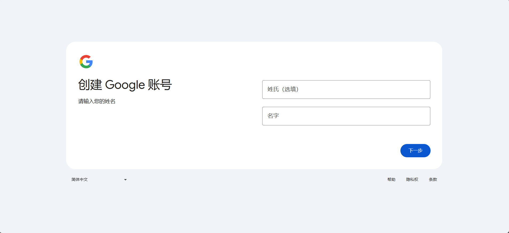
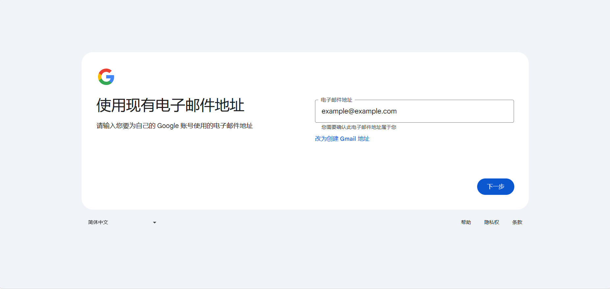
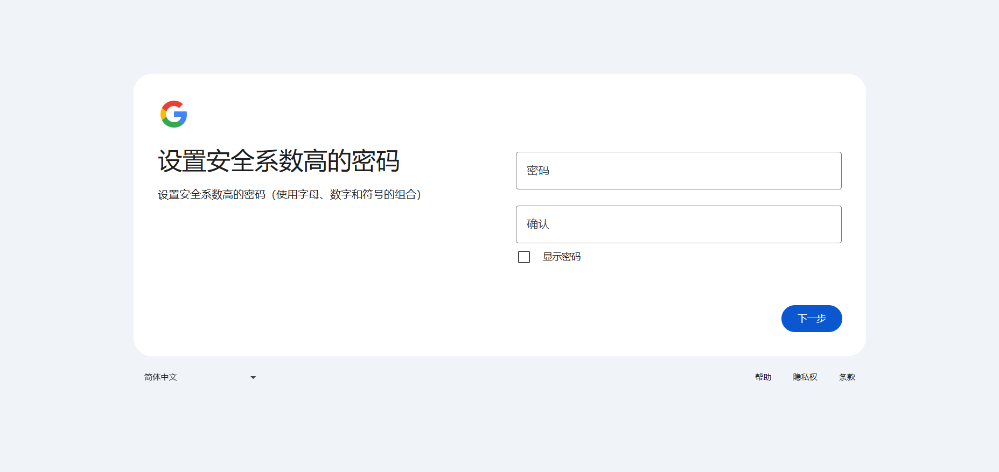
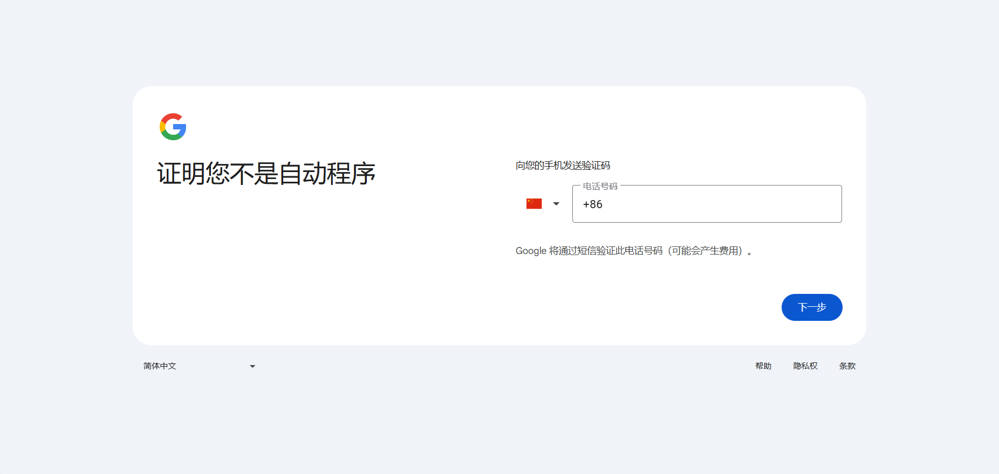

返回主页
赞助
返回主页
赞助
首先，打开您的浏览器，然后访问 Google账号注册页面。
在注册页面中，您需要输入以下信息：
或者：
设置您即将创建的账户的密码。
选择或输入您的电话号码所在的国家/地区电话区号，然后输入电话号码。
如果提示“此电话号码无法用于进行验证。”请尝试使用美国虚拟电话号码后重试，待注册完成后即可更换成您实际使用的电话号码
您可以选择添加备用邮箱地址和电话号码，以在需要时恢复您的账号。
点击“创建账号”按钮，即可完成Google账号的注册。
注册完成后，您可以使用您的新Google账号登录Gmail、Google Drive等服务。